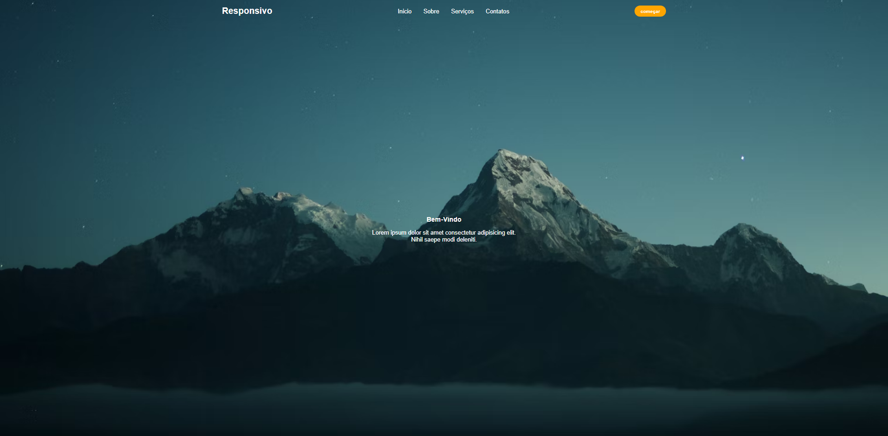
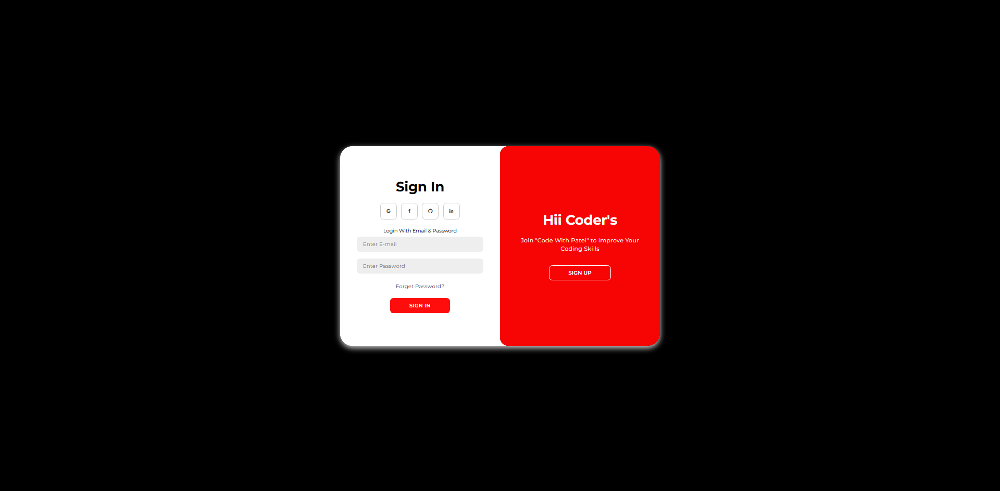
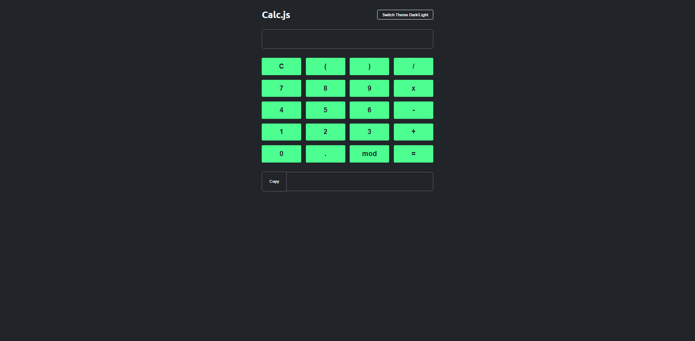

Olá, meu nome é
Gustavo Pessoa
Desenvolvedor Back-end
Desenvolvedor Back-end responsável técnico por sistemas corporativos em C#/.NET 8 — financeiro, logística e gestão de frotas — e também em PHP (Laravel/CodeIgniter), com APIs de apoio a IA, upload de mídia via Cloudflare e disparo de e-mails em massa. Docker e CI/CD no dia a dia.
Sobre mim
Quem sou eu
Desenvolvedor Back-end
Responsável Técnico @ Prolins Software House
ADS · Cruzeiro do Sul (previsão 2027)
Fortaleza, CE
Sou Desenvolvedor Back-end na Prolins Software House, atuando como responsável técnico pelo desenvolvimento de sistemas corporativos complexos — do levantamento de requisitos e definição de arquitetura à modelagem de dados e comunicação direta com stakeholders. Minha especialização é em C# com .NET 8, ASP.NET Core, Entity Framework e Dapper, aplicados na construção de sistemas escaláveis como um sistema financeiro corporativo, uma solução de gestão de troca e destroca de gás e uma plataforma de transporte para eventos de grande porte.
Também desenvolvo sistemas corporativos em PHP (CodeIgniter e Laravel), além de manter e evoluir sistemas como os de clínicas veterinárias e de estética. Curto construir APIs de apoio a IA — upload e otimização de imagens e vídeos com Cloudflare, disparo de e-mails em massa e integrações com WhatsApp.
No dia a dia também trabalho com Docker, pipelines de CI/CD, Cloudflare, gerenciamento de ambientes Linux e conhecimento aplicado em AWS (EC2, ECS, RDS e S3). Sou expert em SQL Server e MariaDB/MySQL, sempre com foco em organização, segurança e escalabilidade.
Também curso Análise e Desenvolvimento de Sistemas pela Cruzeiro do Sul (conclusão prevista para 2027), unindo a base acadêmica à experiência prática de mercado — sempre com autonomia, comunicação clara com clientes e foco em qualidade.
Destaques técnicos
- Arquitetura e desenvolvimento de sistemas corporativos em C#/.NET 8 — financeiro, gestão de gás e transporte de eventos — com Entity Framework e Dapper
- APIs de apoio a IA: upload e otimização de imagens/vídeos via Cloudflare, disparo de e-mails em massa e integração com WhatsApp
- Práticas de DevOps: Docker, CI/CD, Git Flow e gerenciamento de ambientes Linux, com deploy seguro em produção
Experiência profissional
Onde já atuei
Desenvolvedor Back-end
Prolins Software House
Responsável técnico pelo desenvolvimento de sistemas corporativos complexos, atuando no levantamento de requisitos, definição de arquitetura, modelagem de dados e comunicação direta com stakeholders.
Principais sistemas em C# (.NET 8)
sistema interno
Sistema Financeiro Corporativo
Contas a pagar/receber, conciliação bancária, fluxo de caixa e relatórios gerenciais, com controle de permissões granular e auditoria completa de transações.
C# / .NET 8SQL ServerEntity Framework
sistema interno
Gestão de Troca e Destroca de Gás
Controle de estoque de botijões, gestão de entregas e trocas, rastreamento de ativos e rotas, com APIs REST integradas ao app mobile dos entregadores.
C# / .NET 8APIs RESTDapper
sistema interno
Transporte para Eventos de Grande Porte
Controle de frota, alocação de motoristas, planejamento de rotas e gestão de passageiros VIP, com arquitetura para alta disponibilidade em operações críticas.
C# / .NET 8Alta disponibilidade
Atuação com PHP
Desenvolvimento de sistemas corporativos e manutenção evolutiva em CodeIgniter e Laravel: gestão para clínica veterinária, clínica de cirurgia plástica, recrutamento e seleção, e monitoramento de glicemia com integrações via IA para alertas automáticos. Também desenvolvo APIs de apoio como upload e otimização de imagens/vídeos via Cloudflare, disparo de e-mails em massa e integração com WhatsApp.
Práticas de DevOps
Versionamento com Git, padronização de ambientes (dev/homolog/produção), gerenciamento de servidores Linux e atualização segura de banco de dados em produção.
O que eu uso
Habilidades & Ferramentas
.NET / C#
C# (.NET 8)
ASP.NET Core
Entity Framework
Dapper
APIs RESTful
Autenticação e segurança
Back-end (PHP)
PHP 7.4 / 8.1 / 8.3
CodeIgniter
Laravel
Integrações IA & WhatsApp
Upload de mídia (Cloudflare)
E-mail em massa
Banco de Dados
SQL Server
MariaDB / MySQL
Modelagem (DER)
Otimização de queries
Infraestrutura & DevOps
Docker
CI/CD
Cloudflare
Linux
Apache / Nginx
Dev / Homolog / Produção
Versionamento & Fluxo
Git
Git Flow
Cloud (estudos aplicados)
AWS EC2
AWS ECS
RDS
S3
CloudWatch
Front-end
HTML
CSS
JavaScript
React
Node.js
Soft Skills
Autonomia e responsabilidade técnica
Comunicação com clientes
Visão de produto
Organização e qualidade
Marketing & Extra
Google Ads
Instagram Ads
TikTok Ads
LinkedIn Ads
WordPress
Meu trabalho
Projetos



Vamos conversar